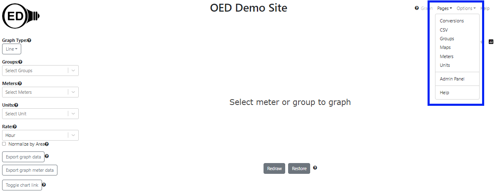

In addition to choosing the type of graphic to see, OED maintains several other pages for admins to maintain OED.
There are several pages available to admin users that are accessed by the "Pages" dropdown menu in the top, right corner of the web browser window (highlighted with a blue box) as shown in the followings figure:

The dropdown choices are given next with a brief description where the provided link goes to another help page with extensive information on that page.
None